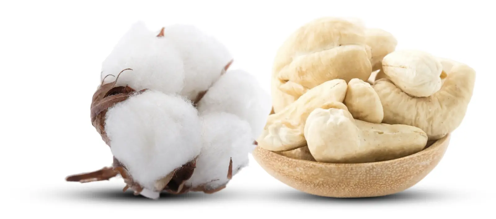
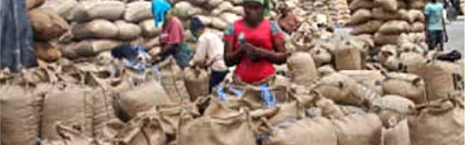
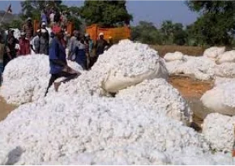

Anacarde
Campagne 2024-2025
Organe de régulation, de suivi et de développement des filières coton, anacarde et karité
Le Conseil du Coton et de l'Anacarde a été institué par l'ordonnance N° 2013-681 du 2 octobre 2013 pour réguler, assainir et impulser un développement durable de ces filières stratégiques.
Fixation et garantie des prix d'achat bord champ, régulation de la commercialisation intérieure et extérieure, encadrement technique des producteurs et soutien aux coopératives.
Une gouvernance concertée associant l'État et les familles professionnelles (producteurs, égreneurs, transformateurs, exportateurs), pilotée par un Conseil d'Administration et une Direction Générale.
« Notre ambition est d'accroître durablement les revenus des producteurs et de hisser la Côte d'Ivoire au rang de leader mondial de la transformation locale de cajou et de coton. »

Anacarde
IndustrialisationFormation pratique intensive aux technologies de décorticage, séchage, classification et maintenance industrielle pour soutenir les transformateurs locaux.

CotonGrâce à l'intervention conjointe du CCA, de l'INTERCOTON et des instituts de recherche, la filière retrouve sa dynamique avec plus de 347 000 tonnes récoltées.
Introduit dans les années 1960 pour le reboisement et la lutte contre la désertification, l'anacardier est devenu en Côte d'Ivoire une culture de rente majeure faisant vivre plus de 400 000 familles. Le CCA coordonne la fixation du prix bord champ, la distribution de plants sélectionnés à haut rendement et soutient l'essor des usines de décorticage sur tout le territoire.
Plus d'infosPilier économique historique des régions des savanes septentrionales (Korhogo, Boundiali, Ferké, Odienné), la filière coton ivoirienne bénéficie d'une organisation exemplaire avec des sociétés d'égrenage performantes. Le Conseil du Coton et de l'Anacarde veille à l'approvisionnement en intrants subventionnés, à l'équité des pesées et à la valorisation de la fibre textile.
Plus d'infosLe Conseil du Coton et de l'Anacarde au plus près des producteurs et acteurs sur l'ensemble du territoire